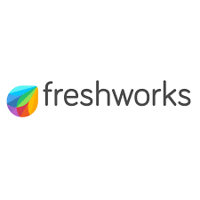
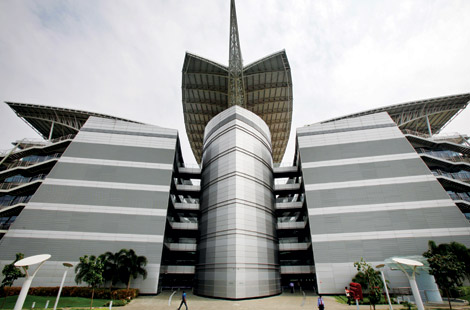
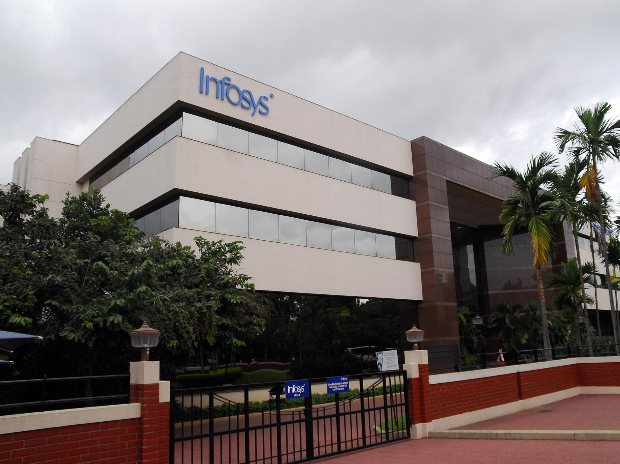

About Chennai
Chennai is one of the leading information technology cities in India.It has numerous software parks, multinational corporations, and Indian IT companies that provide software development, cloud computing, consulting, artificial intelligence, and digital services. Chennai offers excellent infrastructure, skilled professionals, and a rapidly growing technology ecosystem.
Companies in Chennai
- Zoho
- Freshworks
- Tata Consultancy Services (TCS)
- Infosys
1. Zoho 

About
Zoho Corporation is a multinational software company headquartered in Chennai.It develops cloud-based business applications including CRM, accounting, email, HR management, and project management software. Zoho products are used by millions of businesses around the world.
Operating as a highly independent, privately-held technology giant, this flagship campus houses the vast majority of Zoho's global workforce and infrastructure.
Zoho is one of the world's most successful tech companies to have never taken external venture capital funding [1]. Founded by Sridhar Vembu, the company remains completely bootstrapped and highly profitable, allowing it to focus on long-term product engineering rather than short-term investor demands.
Zoho builds an expansive ecosystem of over 55 interconnected cloud applications used by millions globally. Through its unified Zoho One platform, the company offers everything from CRM and accounting to email and HR tools, effectively positioning itself as a highly affordable, single-vendor alternative to giants like Microsoft, Salesforce, and Google
Location & Contact Details
Full Official Address: Plot No. 140 & 151, Estancia IT Park, Grand Southern Trunk (GST) Road, Vallancherry Village, Chengalpattu District, Tamil Nadu 603202.
Primary Telephone Support: +91 1800 103 1123 (Toll-Free) or +91 44 6744 7070
2. Freshworks


About
Freshworks Chennaiserves as the primary operational and engineering powerhouse for Freshworks Inc., a prominent cloud-based software-as-a-service (SaaS) company. While the corporate headquarters is located in San Mateo, California, the Chennai hub remains the beating heart of the company's product innovation, research, and technical scale.
Freshworks develops cloud-based customer engagement and business software. Its products help companies manage customer support, sales, marketing automation, and IT service management.
The Foundation: Freshworks was founded in Chennai in October 2010 by Girish Mathrubootham, Shan Krishnasamy, and Vijay Shankar. It originally launched under the name Freshdesk out of a small warehouse.
Freshworks specializes in building highly intuitive, cloud-based customer service (Freshdesk) and IT management (Freshservice) tools. The company is heavily focused on Agentic AI, using its native Freddy AI framework to autonomously resolve complex customer service requests and IT tickets for over 67,000 businesses worldwide.
Location & Contact Details
Address:Module 1 & 2, 1st Floor, Block B, No. 40, Global Infocity Park, MGR Salai, Perungudi, Chennai, Tamil Nadu - 600096.
Phone Number: +91 44 6667 8040
3. TCS 

About
Tata Consultancy Services is India's largest IT services company.It provides consulting, software development, cloud computing, cybersecurity, data analytics, and artificial intelligence solutions for global clients.
Tata Consultancy Services (TCS) in Chennai serves as one of the largest hub operations for India's premier IT service provider, housing Asia's largest IT campus at Siruseri. The company operates out of more than 15 locations across the city, managing major operations in software development, business processing services, and cutting-edge artificial intelligence facilities like the newly launched Gemini Experience Centre.
TCS Siruseri (SIPCOT IT Park): Spanning 71 acres, this iconic "butterfly-shaped" campus is an architectural marvel and stands as Asia's largest TCS facility. It features state-of-the-art office spaces, massive cafeterias, engineering consultancy labs, and complete recreational amenities like a gymnasium and tennis courts.
Location & Contact Details
TCS Siruseri Techno Park (Main Campus)
-
Address:TCS Siruseri 1/G1, SIPCOT IT Park, Navalur, Siruseri, Kancheepuram District, Tamil Nadu – 603103.
-
Phone Number:+91 44 6742 2222.
TCS Sholinganallur
-
Address:TCS Sholinganallur Kumaran Nagar, 415/21-24, TNHB Main Road, Old Mahabalipuram Road (OMR), Sholinganallur, Chennai, Tamil Nadu – 600119.
-
Phone Number:+91 44 6616 2222
TCS Chennai One Campus
-
Address: TCS Chennai One, 1 ETC Tower, ETL Infrastructure Services SEZ, 200 Feet Radial Road, Thoraipakkam, Chennai, Tamil Nadu – 600097.
-
Phone Number: +91 44 6616 8888.
TCS DLF IT Park Office
-
Address:TCS DLF IT Park, 9th Floor, Block 9, DLF IT Park, 1/124, Mount Poonamallee Road, Mugalivakkam, Chennai, Tamil Nadu – 600089.
4. Infosys 

About
Infosys Chennai operates multiple prominent IT development hubs in Tamil Nadu, serving as a critical operations hub for Infosys Limited. The company originally began its Chennai operations in 1995. Today, its massive presence includes major sprawling facilities across the city that specialize in digital transformation, cloud infrastructure, and AI-powered solutions like Infosys Topaz.
Global IT Leader:A multinational corporation providing digital services, consulting, and automation technologies to clients in over 50 countries.
Innovation Pioneer:Renowned for driving business transformation through next-generation digital solutions, cloud infrastructure, and its proprietary AI suite, Infosys Topaz.Massive Global Workfo
Massive Global Workforce: Employs over 300,000 tech professionals worldwide, featuring sprawling, state-of-the-art sustainable campuses like those in Chennai, Bengaluru, and Pune.
Location & Contact Details
Sholinganallur Campus (OMR)
-
Address: Infosys Limited, 138, Old Mahabalipuram Road, Sholinganallur, Chennai, Tamil Nadu – 600119.
-
Phone Number: +91 44 2450 9530 / +91 44 2450 9540.
-
Fax: +91 44 2450 0390.
Mahindra World City Campus (SEZ)
-
Address:Infosys Limited, Plot No. TP1/1, Central Avenue, Techno Park (SEZ), Mahindra World City, Chengalpattu District, Paranur, Tamil Nadu – 603004.
-
Phone Number:+91 44 4741 1111.
-
Fax: +91 44 4741 5151
Navalur Campus (Pacifica Tech Park)
-
Address: Infosys Limited, Module 2D, 2nd Floor, Pacifica Tech Park, Survey No: 76, No-23, Rajiv Gandhi Salai (OMR), Navalur, Chennai, Tamil Nadu – 600130.
-
Phone Number:+91 44 6927 3500 / +91 44 4499 5333.